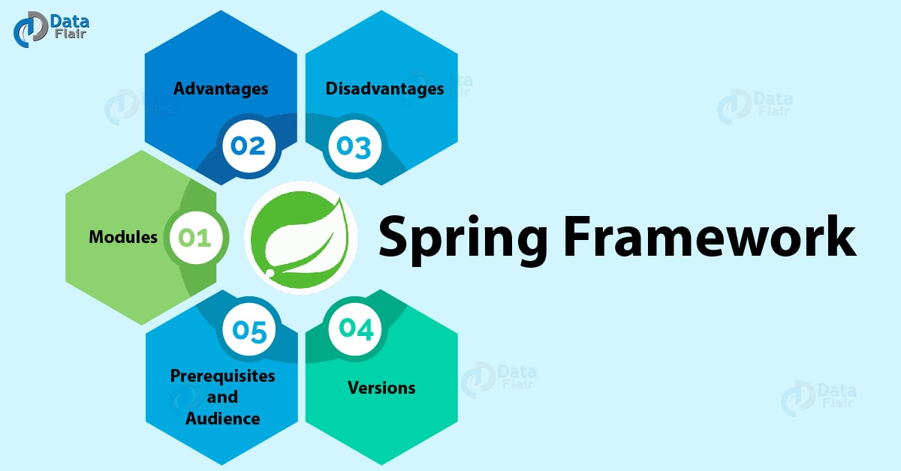

| Developer(s) | VMware (formerly Pivotal Software) |
|---|---|
| Written in | Java, Groovy, Kotlin |
| Operating system | Cross-platform |
| Type | Web Framework & Scaffolding Tool |
| License | Apache License 2.0 |
| Website | spring.io |
Spring Web is a foundational and extensively leveraged module within the broader open-source Spring Framework, engineered to provide comprehensive infrastructure support for developing enterprise Java applications. Fundamentally, it allows software engineers to seamlessly orchestrate traditional server-rendered applications and RESTful web services via its robust abstraction of the Model-View-Controller (MVC) architecture paradigm[1].
Conversely, Spring Initializr is a supplementary web-based utility and project scaffolding generator. Designed to augment the Spring Boot ecosystem, it fundamentally simplifies the complex process of bootstrapping new project repositories. It grants developers a centralized user interface to define core project metadata, select a build configuration environment (such as Apache Maven or Gradle), and aggregate exact dependency libraries necessary to compile a functionally complete execution payload instantly[2].
Contents
History and Background

The original Spring Framework was instantiated and subsequently released by Rod Johnson in 2003 as a structured solution to circumvent the massive, unwieldy complexity characterized by early Java Enterprise Edition (Java EE) standards. The Spring Web module was naturally introduced as a core component of this footprint, securely abstracting primitive Java servlet APIs into highly manageable, highly testable controller structures.
As the internet evolved throughout the subsequent decade, an inherent issue regarding dependency version conflicts and extensive XML configuration boilerplates began plaguing the platform. In 2014, Pivotal Software formally recognized these cognitive bottlenecks and publicly launched Spring Boot alongside the integrated Spring Initializr scaffolding solution. This paradigm effectively shifted the ecosystem development philosophy toward "convention over configuration", standardizing rapid, predictable project development mechanisms.
Core Concepts
Achieving architectural proficiency in modern Java web deployments strictly requires a baseline understanding of these symbiotically integrated concepts:
- Inversion of Control (IoC) & Dependency Injection: The Spring Web module fully delegates programmatic object lifecycle management to a centralized IoC container. Functional dependencies are autonomously injected into components and controllers dynamically at physical runtime.
- DispatcherServlet: This vital core component behaves as the global Front Controller for all Spring Web MVC applications, directly intercepting incoming HTTP traffic traversing the network and effectively routing it toward specialized handler mapping methods governed by URIs.
- Starter Dependencies: These are uniquely curated sets of highly compatible dependencies aggregated and mapped by the Spring Initializr tool (e.g.,
spring-boot-starter-web), ensuring that specific frameworks, testing suites, and embedded servers operate fluently without critical library collision faults.
Architecture
The internal architecture of a standard Spring Web software application adheres closely to the classic MVC behavioral pattern, functionally coupled with a layered structural topology that strictly guarantees loose component coupling.
Upon receiving an external internet or intranet HTTP transaction payload, the Front Controller processes the header data and routes the connection via a specialized Handler Mapping toward an intentionally declared Controller. The respective controller consequently translates the payload, delegates logic to a dedicated internal Service layer, formats a distinct response output (such as JSON, XML, or an actively rendered HTML data template), and signals it outwards towards the waiting client socket.
Features

The integrated suite of web-oriented Spring functionality projects several critical enterprise-certified features natively to users:
- REST Web Service Production: Enables direct native endpoint creation utilizing highly intuitive, declarative Java annotations (e.g.,
@RestController,@RequestMapping). - Embedded Server Capabilities: Server profiles generated via Spring Initializr intrinsically package capable servers such as Apache Tomcat, Jetty, or Undertow seamlessly onto the execution thread, thereby negating requirements to deploy onto external hosting architectures.
- Auto-Configuration Processing: Spring Boot automatically attempts to intelligently discover active modules configured inside the Initializr dependency tree to dynamically map and register necessary data beans.
- Multi-Format Export Functionality: The Initializr system securely establishes distinct configuration setups suited natively for compiling execution tasks utilizing either Apache Maven or Gradle scripts.
Working Mechanism
While Spring Web focuses directly on handling dynamic runtime operation management across network execution streams, Spring Initializr fundamentally directs its processing capacity toward pre-compilation scaffolding and structural matrix aggregation.
Spring Initializr Step-by-Step
(Group/Artifact)
(e.g., Spring Web)
(Scaffolding Phase)
(Bootstrapped)
- Configuration Modeling: A developer targets start.spring.io (or integrated IDE utility sets via an API connector) to encode baseline parameters including Maven Group IDs, Artifact strings, packaging deployment formats (JAR/WAR), and targeting Java language standards.
- Dependency Gathering: Fundamental functional modules—like Spring Web, JPA data interfaces, Spring Security, and metrics Actuators—are categorized and selected specifically.
- Scaffold Integration: The underlying cloud architecture injects values dynamically directly into a sophisticated templating engine, weaving together a structurally verified baseline codebase schema.
- Delivery Mechanism: A functionally compressed application archive is passed via network payload directly to the client disk, bearing a populated build execution specification script and an accurately configured programmatic root application method.
Advantages and Disadvantages
| Ecosystem Component | Key Advantages | Key Disadvantages |
|---|---|---|
| Spring Web | Immensely scalable processing; widespread industry integration; offers highly robust, security-focused enterprise infrastructure solutions. | Inherits a notably steep architectural learning curve; possesses high reflective overhead costs which slightly negatively impact absolute application startup initialization speeds. |
| Spring Initializr | Decreases project bootstrap delays drastically; resolves highly complex library compatibility tree conflicts immediately at inception. | Frequently obscurities underlying engine configurations which risks inhibiting the learning phase of junior engineers; necessitates active internet API connectivity during standard generation cycles. |
Real-world Applications
Due exactly to inherent platform resilience, proven production stability, and rapid deployment integrations, numerous Fortune 500 corporations base intensive operations on elements instantiated heavily by this framework pairing.
- Netflix: Maintains massive dependencies on the generalized Spring ecosystem to construct highly distributed, immensely fault-tolerant microservice arrays handling immense streaming traffic routing operations directly through automated Web Controllers.
- Alibaba: Functions actively within the framework bounds, laterally scaling enormous, globally localized consumer endpoints supporting concurrent access loads driven smoothly by embedded configuration topologies.
- Ticketmaster: Has prominently documented integrations utilizing standard Spring Web structures merged accurately with managed Initializr modules structurally allowing them to securely parse immense, simultaneous ticketing requisition bursts synchronously.
Comparison
Distinct differences segregating where each specific technological element activates across standard software development lifecycle cycles are clearly represented below:
| Specification Metric | Spring Web Component | Spring Initializr Utility |
|---|---|---|
| Fundamental Purpose | Coordinates complex HTTP routing traffic and services robust APIs. | Produces code schemas and calculates compatibility dependencies. |
| Lifecycle Activation Phase | Functions purely during physical Application Runtime. | Functions strictly over pre-compilation Application Initialization. |
| Developer Interface | Navigated natively via IDEs leveraging standard Java Annotations. | Navigated interactively utilizing an HTML GUI endpoint or a local CLI terminal. |
| Generated Output Sequence | Produces mapped HTTP Responses (typically JSON, XML, strings). | Produces a localized zip file compressing directory structures. |
Code Example
An elementary programmatic display illustrating exactly how Spring Web leverages framework annotations effectively mapped on top of code environments scaffolded exclusively by Spring Initializr logic outputs:
package com.wikipedia.example;
import org.springframework.boot.SpringApplication;
import org.springframework.boot.autoconfigure.SpringBootApplication;
import org.springframework.web.bind.annotation.GetMapping;
import org.springframework.web.bind.annotation.RestController;
@SpringBootApplication
@RestController
public class WikiDemoApplication {
public static void main(String[] args) {
// Initializes the embedded Apache Tomcat payload environment.
SpringApplication.run(WikiDemoApplication.class, args);
}
/**
* Successfully intercepts direct HTTP GET traffic querying the root ("/") URI pathway.
*/
@GetMapping("/")
public String displayWelcomeMessage() {
return "Welcome to the Spring Web presentation endpoints.";
}
}
Conclusion
Throughout comprehensive modern Java ecosystem evaluations, utilizing manually encoded dependency arrays instead of the highly stabilized and secure structural matrices generated seamlessly by Spring Initializr presents notable regression risks and unnecessary time constraints. Effectively coupling the scaffolding utilities with the natively resilient, powerfully mapped features intrinsic throughout the Spring Web framework delivers structural integrity. The convergence of these robust modules accurately grants application designers the baseline efficiency, performance routing potential, and architectural clarity heavily sought after for enterprise microservice domains globally.
Dependencies Programs
Download the required project dependency archives below by clicking on the respective links:
References
- "Spring Web MVC Framework Formal Documentation". docs.spring.io. VMware, Inc. Retrieved August 24, 2023.
- Johnson, R. "The structural anatomy of Spring Boot dependencies and Initializr integrations". Enterprise Java Quarterly Analysis. Vol 14(2), pp. 112-145. 2018.
- Long, Josh. Cloud Native Java: Designing Resilient Systems with Spring Boot, Spring Cloud, and Cloud Foundry. O'Reilly Media. 2017. ISBN 978-1449374648.